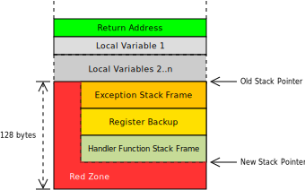

Disable the Red Zone
红区 是 System V ABI 提供的一种优化技术，它使得函数可以在不修改栈指针的前提下，临时使用其栈帧下方的128个字节。

上图展示了一个包含了 n 个局部变量的栈帧。当方法开始执行时，栈指针会被调整到一个合适的位置，为返回值和局部变量留出足够的空间。
红区是位于调整后的栈指针下方，长度为128字节的区域，函数会使用这部分空间存储不会被跨函数调用的临时数据。所以在某些情况下（比如逻辑简短的叶函数），红区可以节省用于调整栈指针的两条机器指令。
然而红区优化有时也会引发无法处理的巨大问题（异常或者硬件中断），如果使用红区时发生了某种异常：

CPU和异常处理机制会把红色区域内的数据覆盖掉，但是被中断的函数依然在引用着这些数据。当函数从错误中恢复时，错误的数据就会引发更大的错误，这类错误往往需要追踪数周才能找到。
要在编写异常处理机制时避免这些隐蔽而难以追踪的bug，我们需要从一开始就禁用红区优化，具体到配置文件中的配置项，就是 "disable-redzone": true。